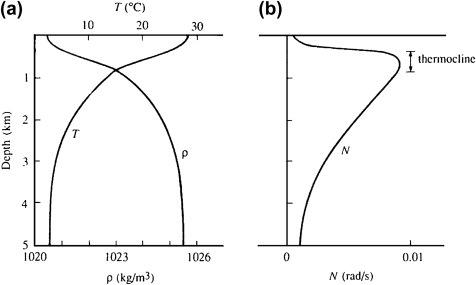
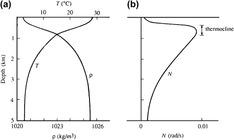

The group velocity here has the usual significance of being the velocity of propagation of energy of a certain sinusoidal component.
Suppose a source is oscillating at frequency \(\omega\), then its energy will be transmitted outward only along four beams oriented at an angle \(\theta\) with the vertical
\(
\cos\theta = \frac{\omega}{N}
\)
This has been verified in the laboratory laboratory experiment, a vertically oscillating cylinder was used with frequency \(\omega < N\). The light and dark radial lines represent contours of constant \( \rho' \) and are therefore constant phase lines.
The schematic diagram below the photograph shows the directions of \( \mathbf{c} \) and \( \mathbf{c}_g \) for the four beams.
The lines of constant density, made visible optically, showed that energy radiated along beams that became more vertical as \(\omega\) increased, consistent with
\(
\cos\theta = \frac{\omega}{N}
\)
 These results assumed that \(N\) is depth-independent. For \(N\) vs. depth for the deep ocean, where \(N < 0.01\) almost everywhere, but \(N\) is largest between \(\sim 200\,\text{m}\) and \(\sim 2\,\text{km}\), these
results are considered locally valid if \(N\) varies slowly over the vertical wavelength \(2\pi/m\).
This is the so-called WKB approximation for internal waves (where slow variation of \(N(z)\) is included)

These results assumed that \(N\) is depth-independent. For \(N\) vs. depth for the deep ocean, where \(N < 0.01\) almost everywhere, but \(N\) is largest between \(\sim 200\,\text{m}\) and \(\sim 2\,\text{km}\), these
results are considered locally valid if \(N\) varies slowly over the vertical wavelength \(2\pi/m\).
This is the so-called WKB approximation for internal waves (where slow variation of \(N(z)\) is included)
